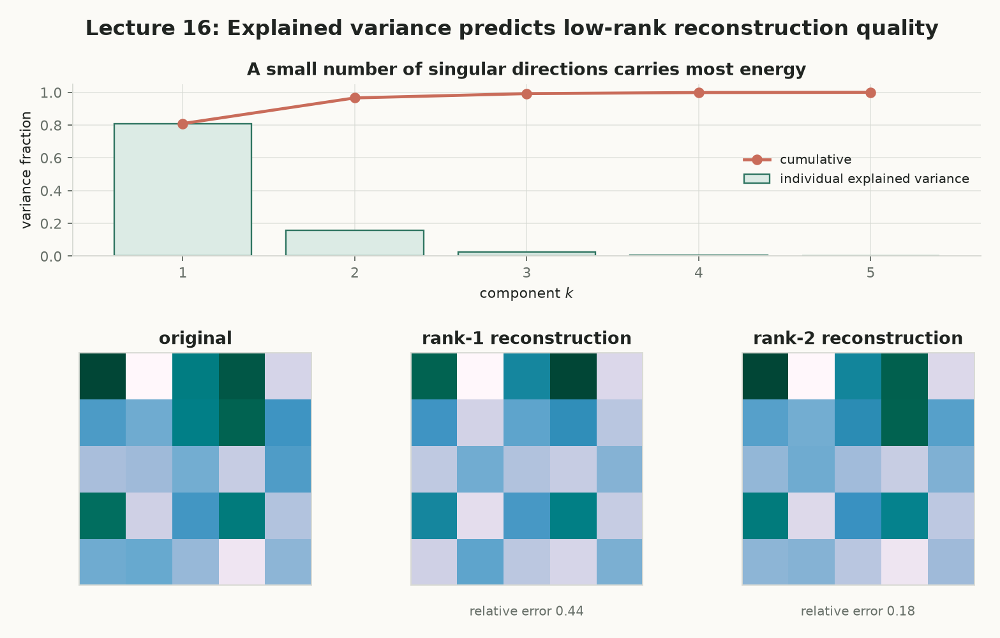
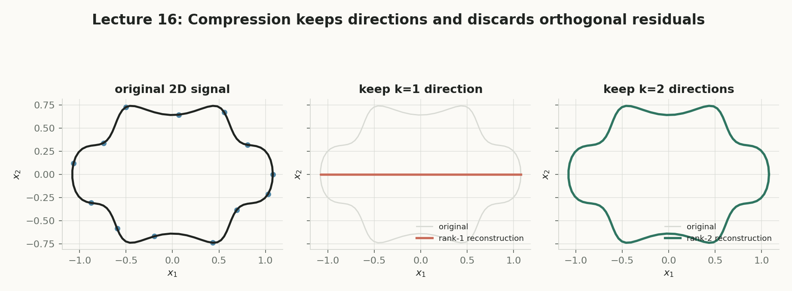
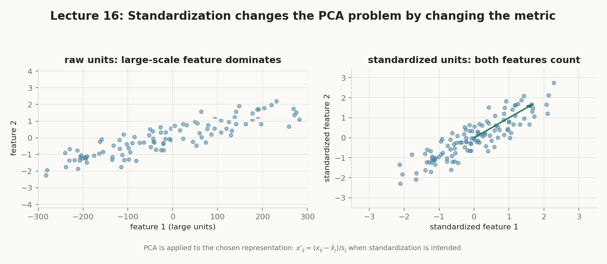
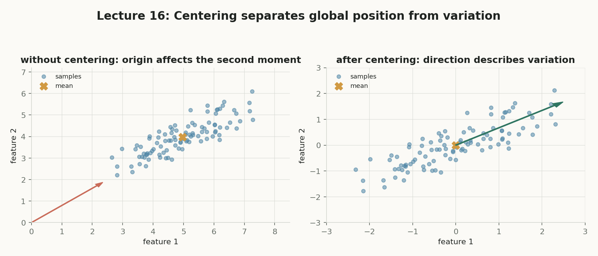
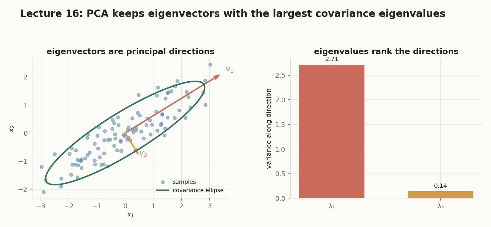
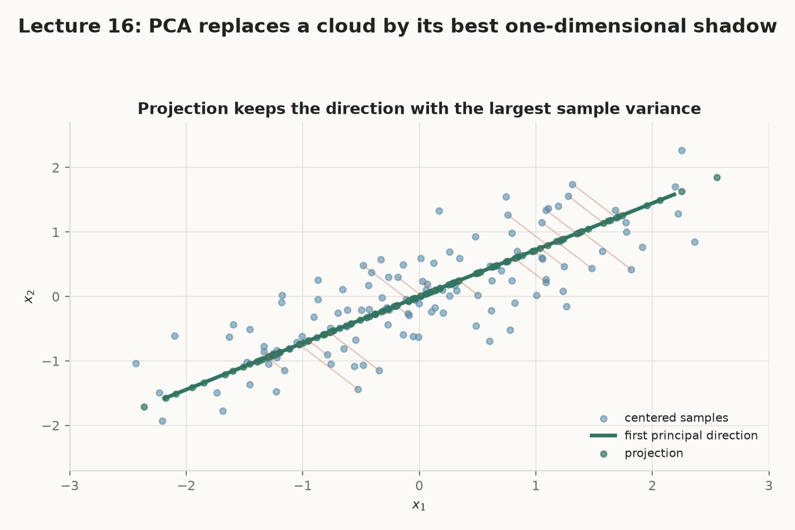

高维数据，
怎么用一条线或
一个低维子空间重建出来？
第 15 讲用 $k$-means 的离散中心压缩数据；这一讲把离散中心换成连续低维坐标和线性子空间。给定点 $x_i\in\mathbb{R}^d$，PCA 找 $k\ll d$ 维的 $z_i\in\mathbb{R}^k$，使重建误差尽量小。主线是：中心化 → 正交投影 → 最小重构误差 = 最大投影方差 → Rayleigh quotient / 特征分解 → $k$ 维 PCA → SVD / explained variance。下一讲（第 18 讲）再用 kernel PCA 与 autoencoder 处理弯曲流形。
📌 今天讲什么
从“影子”直觉进入严格目标：中心化去掉位置 → 把一维 PCA 写成 $\min\sum\lVert z_iw-x_i\rVert^2$ → 最优坐标是正交投影 → 勾股定理把最小误差转成最大投影方差 → Rayleigh quotient 与特征分解求出方向 → 扩展到 $k$ 维与 SVD → 用 explained variance 和低秩近似量化压缩 → 讨论尺度选择、常见误区、与 $k$-means / 第 18 讲桥接。
🔥 为什么重要
降维是可视化、数据压缩、去噪与无监督特征学习的公共入口。PCA 第一次给出“用简单表示保留数据结构”的可计算目标，也是理解特征分解、SVD、低秩模型和表示学习的最小骨架。
🧭 主线逻辑（整讲五步）
§0课程地图：降维在这门课里的位置
第 15 讲的 $k$-means 用 $k$ 个离散中心压缩；本讲把中心换成连续坐标与正交子空间——PCA。第 18 讲会进一步放松线性结构，处理 kernel PCA 与 autoencoder。节点可点击跳转到对应小节。
§1从影子和压缩开始：降维不是删列 核心
三维物体投到墙上得到一个二维影子。影子少了一个坐标，但若投影方向选得好，仍保留物体的大部分变化。降维也是如此：不是随意删除原始特征，而是寻找数据云最值得保留的方向。
是什么：把 $d$ 维样本 $x_i$ 映射到低维坐标 $z_i\in\mathbb{R}^k$（$k\ll d$），同时尽量保留数据结构；本讲用“线性重建误差”衡量保留程度。
白话：像拍影子一样，丢掉一些坐标，但留下看得清形状的那个角度。
干嘛用：可视化（$k=2,3$）、压缩存储、去噪、无监督特征学习。
怎么算 / 怎么用：定义 $z_i=f(x_i)$ 和重建 $\hat x_i=g(z_i)$，最小化 $\sum\lVert \hat x_i-x_i\rVert^2$；本讲取 $f,g$ 为线性投影。
为什么重要 + 连接：它把“简单表示”变成可优化问题；与第 15 讲聚类共享“用代表点重建数据”的视角，但把离散码换成连续码。
是什么：高维样本往往位于一个远比 $d$ 低的弯曲结构（流形）附近；比如人脸的像素向量受光照、姿态、身份等少量因素控制。
白话：看着有几百个数字，其实真正在动的只有几个旋钮。
干嘛用：解释为什么降维可行；也警告“低维”不等于“直线”——普通 PCA 只能抓线性子空间。
怎么算 / 怎么用：数据点 $x_i$ 可近似写成 $g(z_i)$，$z_i$ 是流形坐标；PCA 假设 $g$ 是线性映射。
为什么重要 + 连接：它把“降维为什么有效”和“为什么第 18 讲要非线性”连在一起。
是什么：一种线性降维方法：先中心化，再找解释最大方差的正交线性子空间；低维坐标是数据在该子空间上的正交投影。
白话：给数据云找一个“最能拉开差距”的新坐标系，取前 $k$ 个轴。
干嘛用：可视化、压缩、无监督特征学习、数据预处理。
怎么算 / 怎么用：中心化 → 构造协方差矩阵（或直接 SVD）→ 取前 $k$ 个特征向量/右奇异向量 → 投影得到 $z_i$。
为什么重要 + 连接：它是线性表示学习的起点；第 18 讲的 kernel PCA / autoencoder 是它的非线性扩展。
§2worked example：二维数据投到一条直线 核心
四个点 $x_1=(1,1),x_2=(2,2),x_3=(-1,-1),x_4=(-2,-2)$ 已经中心化且落在直线 $x_2=x_1$ 上。取单位方向 $w=(\cos\theta,\sin\theta)$，每个点的低维坐标是标量 $z_i=w^{\top}x_i$，重建是 $\hat x_i=z_iw$。下面用滑杆现算总平方误差。
方向滑杆：总平方误差随 $\theta$ 变化
§3中心化：先去掉位置，再研究变化 核心
PCA 关心的是“数据云相对均值怎么变化”，而不是“数据云离原点有多远”。若所有点在 $(100,100)$ 附近小幅波动，不中心化时，原点到数据云的方向会污染二阶矩。
是什么：每个样本减均值，$\tilde x_i=x_i-\bar x$，其中 $\bar x=\frac1n\sum_i x_i$；中心化后样本均值为零。
白话：把坐标系原点挪到数据云的重心，只看“抖动”，不看“坐在哪里”。
干嘛用：让 PCA 的方向反映数据的真实变化，而不是整体位置。
怎么算 / 怎么用：先算每维均值，再逐样本减均值；后面简记 $\tilde x_i$ 为 $x_i$，恢复时再加回。
为什么重要 + 连接：不中心化时，第一主成分可能指向原点，而不是波动方向；这是进入 PCA 目标前必须做的预处理。
是什么：$\Sigma=\frac1n\sum_{i=1}^n x_ix_i^{\top}\in\mathbb{R}^{d\times d}$（中心化数据；课件约定不除 $n-1$）。
白话：一张“各特征两两怎么一起变动”的对称信息表。
干嘛用：把数据的变化压缩成一个矩阵，特征向量就是 PCA 方向。
怎么算 / 怎么用：对每个中心化样本做外积 $x_ix_i^{\top}$，再取平均；$1/(n-1)$ 只会整体缩放特征值，不改变方向。
为什么重要 + 连接：它是第 7 节 Rayleigh quotient 的“系数矩阵”，也是 PCA 与 SVD 会合的桥梁。
随机数据：中心化前 vs 中心化后的第一主方向
§4一维 PCA 的重建目标 核心
把“找一条最好的线”写成优化问题：未知量是线的单位方向 $w$ 和每个点在线上的位置 $z_i$。给定二者后，$\hat x_i=z_iw$ 重建原样本。
未知量：$w\in\mathbb{R}^d$ 是单位方向（$\lVert w\rVert_2=1$）；$z_i\in\mathbb{R}$ 是样本 $x_i$ 在线上的标量坐标。
若不约束，把 $w$ 乘 $10$、同时把每个 $z_i$ 除以 $10$，重建 $z_iw$ 完全不变，但“坐标”和“方向”的分解毫无意义。单位长度约束消除这种尺度歧义。
这个联合问题同时含 $n+1$ 个未知量；下一节先固定 $w$，把所有 $z_i$ 精确求出来，问题就只剩方向 $w$。
§5给定方向时，最优坐标是正交投影 核心
固定单位向量 $w$ 和一个点 $x$，未知量只剩标量 $z$。$q(z)=\lVert zw-x\rVert_2^2$ 对 $z$ 求导得到 $z^\star=w^{\top}x$，也就是到直线 $\operatorname{span}(w)$ 的正交投影。
是什么：给定子空间 $S$，点 $x$ 在 $S$ 上的最近点 $\hat x=P_Sx$；对一维 $\operatorname{span}(w)$，$P_w=ww^{\top}$，$\hat x=ww^{\top}x$。
白话：从点向线作垂线，垂足就是投影；垂线最短。
干嘛用：在固定方向上给出最优低维坐标 $z=w^{\top}x$。
怎么算 / 怎么用：展开 $q(z)=z^2-2z\,w^{\top}x+x^{\top}x$，令导数 $2z-2w^{\top}x=0$，得 $z^\star=w^{\top}x$；所有点代入得 $\hat x_i=ww^{\top}x_i$。
为什么重要 + 连接：正交性直接导出第 6 节的勾股分解——残差与投影垂直，所以总能量能拆成“保留 + 丢失”。
是什么：$z_i=w^{\top}x_i$ 是有符号长度：$x_i$ 沿单位方向 $w$ 投影后的线性坐标。
白话：把点“按到”单位尺子上读出的刻度。
干嘛用：这是 PCA 输出的低维编码；可视化、压缩、下游模型都用它。
怎么算 / 怎么用：一个内积即可；矩阵批量版本是 $z_i=W^{\top}x_i$。
为什么重要 + 连接：编码一旦由 $w$ 决定，原来的联合优化就只剩“选哪个方向”了。
单个点的投影与残差
§6重构误差等价于最大投影方差 核心
投影与残差正交：$w^{\top}(x_i-ww^{\top}x_i)=0$。于是勾股定理给出 $\lVert x_i\rVert_2^2=\lVert ww^{\top}x_i\rVert_2^2+\lVert x_i-ww^{\top}x_i\rVert_2^2$，而 $\lVert ww^{\top}x_i\rVert_2^2=(w^{\top}x_i)^2$。
左边是“丢失能量”，右边是“保留能量”；数据固定时两者相加为常数。因为数据已中心化，$\frac1n\sum_i w^{\top}x_i=0$，所以右边除以 $n$ 正是投影坐标的经验方差。
能量分配：固定数据集下的“保留 vs 丢失”
§7协方差与 Rayleigh quotient：特征向量就是主方向 核心
单个样本的平方 $(w^{\top}x_i)^2=(w^{\top}x_i)(x_i^{\top}w)=w^{\top}x_ix_i^{\top}w$，求和后得到 $w^{\top}\Sigma w$。于是一维 PCA 解 $\max_{\lVert w\rVert_2=1}w^{\top}\Sigma w$。
是什么：$R_\Sigma(w)=\frac{w^{\top}\Sigma w}{w^{\top}w}$，对 $w$ 的缩放不变。
白话：对任意方向 $w$，给出“沿这个方向的方差密度”的评分。
干嘛用：把约束 $\lVert w\rVert=1$ 写进商里，方便用特征分解求最大值。
怎么算 / 怎么用：取任意非零 $w$ 计算商即可；单位向量只是代表性选择。最大特征值对应的特征向量达到最大值。
为什么重要 + 连接：它把 PCA 与线性代数的特征分解直接连接；特征向量 = 主方向，特征值 = 该方向方差。
是什么：对称阵 $\Sigma=\sum_{r=1}^d\lambda_rv_rv_r^{\top}$，其中 $\lambda_1\ge\cdots\ge\lambda_d\ge0$，$v_r$ 两两正交。
白话：把一个“椭圆”拆成长轴、次长轴……每个轴有长度（特征值）和方向（特征向量）。
干嘛用：PCA 直接取前 $k$ 根轴。
怎么算 / 怎么用：拉格朗日乘子 $\mathcal L=w^{\top}\Sigma w+\lambda(1-w^{\top}w)$，令梯度为零得 $\Sigma w=\lambda w$；左乘 $w^{\top}$ 得目标值 $=\lambda$。
为什么重要 + 连接：排序后的特征值给出“保留预算”的单价；第 10 节的 explained variance 就是从这里来的。
协方差椭圆与 $R_\Sigma(\theta)$ 曲线
§8worked example：协方差、特征值和投影 核心
取三个中心化点 $x_1=(1,0)^{\top},x_2=(-1,0)^{\top},x_3=(0,0)^{\top}$。它们只在 $x_1$ 轴方向变化，所以 $\Sigma=\operatorname{diag}(2/3,0)$，第一主方向是 $x$ 轴。
总方差 $=2/3$；一维 PCA 解释方差比例 $=1$。点 $x=(3,1)^{\top}$ 投到 $v_1$ 得 $z=3$、$\hat x=(3,0)^{\top}$、重构误差 $=1$。
§9$k$ 维 PCA：从一条线到一个子空间 核心
用矩阵 $W=[v_1\mid\cdots\mid v_k]\in\mathbb{R}^{d\times k}$ 表示 $k$ 个单位正交基，满足 $W^{\top}W=I_k$。编码和重建分别是 $z_i=W^{\top}x_i\in\mathbb{R}^k$、$\hat x_i=Wz_i=WW^{\top}x_i\in\mathbb{R}^d$。
固定 $W$ 的最优编码：$z_i^\star=W^{\top}x_i$，由 $\nabla_{z_i}\lVert Wz_i-x_i\rVert^2=2W^{\top}(Wz_i-x_i)$ 得到。
特征分解视角：$\operatorname{tr}(W^{\top}\Sigma W)=\sum_{r=1}^d\lambda_r\lVert W^{\top}v_r\rVert_2^2$，且 $\sum_r\lVert W^{\top}v_r\rVert_2^2=k$。总共只有 $k$ 个单位“保留预算”，全部放到最大 $k$ 个特征值上最优，即 $W^\star=[v_1|\cdots|v_k]$。
最小平均平方重构误差为 $\frac1nE(W^\star)=\sum_{r=k+1}^d\lambda_r$；前 $k$ 个特征值是被保留下来的变化。
§10explained variance 与重构预算 核心
第 $r$ 个主成分方向的方差是 $\lambda_r$，总方差是 $\sum_r\lambda_r$。前 $k$ 个方向解释的比例为 $\mathrm{EVR}(k)=\frac{\sum_{r=1}^k\lambda_r}{\sum_{r=1}^d\lambda_r}$；中心化数据的平均平方重构误差为 $\sum_{r=k+1}^d\lambda_r$，所以比值 $=1-\mathrm{EVR}(k)$。
特征值谱、EVR 与重构误差
§11奇异值分解（SVD）与 PCA 的维度关系：$V$ 才是主方向 核心
把 $n$ 个中心化样本按行堆成 $X\in\mathbb{R}^{n\times d}$，SVD 为 $X=U\mathcal{S}V^{\top}$，其中 $U\in\mathbb{R}^{n\times n}$ 描述样本侧方向，$V\in\mathbb{R}^{d\times d}$ 描述特征空间方向。PCA 要找的是 $\mathbb{R}^d$ 中的方向，所以答案在 $V$。
因此 $\lambda_r=\sigma_r^2/n$；PCA 主方向就是 $V$ 的前 $k$ 列。对样本按行的约定，$V$ 是右奇异向量。
实际常用 compact SVD：只保留非零奇异值。直接对 $X$ 做 SVD 避免了显式形成 $X^{\top}X$（后者会平方条件数），通常更数值稳定。得到 $V_k$ 后，所有样本的低维坐标是 $Z=XV_k\in\mathbb{R}^{n\times k}$。
§12worked example：小型 SVD、解释方差和重建 核心
中心化数据矩阵的奇异值为 $\sigma_1=6,\sigma_2=3,\sigma_3=1$，$n=10$。对应的特征值是 $\lambda_1=3.6,\lambda_2=0.9,\lambda_3=0.1$，总方差 $4.6$。
$k=1$：$\mathrm{EVR}(1)=3.6/4.6\approx0.7826$，平均重构误差 $=1.0$。$k=2$：$\mathrm{EVR}(2)=4.5/4.6\approx0.9783$，平均重构误差 $=0.1$。未归一化的 Frobenius 重构误差取后 $k=2$ 时为 $\sigma_3^2=1$。
§13低秩近似与 eigenfaces：把人脸压成几个“特征脸” 拓展
SVD 把数据矩阵写成外积和：$X=\sum_{r=1}^{\min(n,d)}\sigma_ru_rv_r^{\top}$。保留前 $k$ 项得到截断 SVD $\hat X_k=\sum_{r=1}^k\sigma_ru_rv_r^{\top}$，它是 Frobenius 范数下最佳的秩不超过 $k$ 的近似。
是什么：只保留最大的 $k$ 个奇异值项，得到秩至多 $k$ 的矩阵 $\hat X_k$。
白话：用“前几张主要模板”的叠加逼近整批图片。
干嘛用：压缩存储、去噪、可视化、特征提取。
怎么算 / 怎么用：对 $X$ 做 SVD，丢弃小奇异值项；Eckart–Young 定理保证它在 Frobenius 范数下最优。
为什么重要 + 连接：它把 PCA 从“投影”扩展成“矩阵近似”，是第 13 节 eigenfaces 和很多表示学习模型的骨架。
是什么：把 $N\times N$ 人脸图像展平成 $\mathbb{R}^{N^2}$ 向量后，PCA 主方向重排成图像就是“特征脸”。
白话：用一叠“平均脸 + 几张大方向模板”拼出任意人脸。
干嘛用：经典人脸压缩/识别表示；说明低秩近似可解释。
怎么算 / 怎么用：均值脸 $\bar x$ 加上 $\sum_{r=1}^k z_{ir}v_r$ 重建；$z_{ir}$ 是第 $i$ 张图在第 $r$ 个主方向上的坐标。
为什么重要 + 连接：高方差方向可能是光照/姿态而非语义类别——这正是“解释方差不等于任务信息”的实例。


§14PCA 的使用流程与尺度选择 核心
给定原始数据矩阵 $X_{\mathrm{raw}}\in\mathbb{R}^{n\times d}$：先计算每列均值并中心化，再根据领域决定是否标准化，然后做 SVD 取前 $k$ 列，最后得到低维坐标。
- 计算每列均值 $\bar x_j$，形成中心化矩阵 $X_c$。
- 根据领域含义决定是否按 $s_j$ 标准化，使用 $X_s$ 而非 $X_c$。
- 对工作矩阵做 SVD，取右奇异向量前 $k$ 列 $W$。
- 得到 $Z=X_sW$；需要回到原量纲时，先乘回尺度，再加回均值。
是什么：把每个特征变成零均值、单位标准差：$x_{ij}'=\frac{x_{ij}-\bar x_j}{s_j}$。
白话：让“美元”和“米”都变成“偏离平均多少个标准差”，不再被单位带偏。
干嘛用：防止量级大的特征单方面主导方差。
怎么算 / 怎么用：先减均值再除标准差，然后才做 SVD；是否标准化由问题语义决定，不是实现细节。
为什么重要 + 连接：标准化改变 PCA 的主方向；它和第 15 讲“距离函数/特征尺度是模型的一部分”是同一原则。

§15PCA、$k$-means 与第 18 讲的桥接 核心
第 15 讲的 $k$-means 可写成 $\min_{W,z_i}\sum_i\lVert Wz_i-x_i\rVert_2^2$，其中 $z_i\in\{e_1,\ldots,e_k\}$（one-hot）且 $W=[\mu_1|\cdots|\mu_k]$。PCA 则是 $z_i\in\mathbb{R}^k$ 且 $W^{\top}W=I_k$。两者共享“受约束的重建”视角。
编码是选簇号；重建由所选中心给出。
编码是连续坐标；重建是正交投影。
PCA 只能展开线性子空间；当数据落在弯曲流形（如 Swiss roll）上，线性投影会把本应分开的流形“压叠”在一起。第 18 讲会放松 $Wz$ 的线性结构，转向 kernel PCA 和 autoencoder。
§16常见误区：听起来对，其实不对 核心
不是。主成分通常是原始特征的线性组合，不是原坐标的子集。
它只在方差/重构意义下最重要；低方差方向可能携带分类信号。
不中心化时，数据相对原点的位置会混入变化方向。
方差是几何量，不是语义量。
只有在同一预处理和单位约定下比较才有意义。
普通 PCA 只能选择线性子空间；弯曲流形需要非线性方法。
对样本按行的约定，主方向是右奇异向量，即 $V$ 的列。
§17课件原图对照 拓展
以下几张来自原讲义的图，已本地化到本目录 assets/pca-lab/。它们和上面的互动 SVG 说的是同一件事：投影几何、特征向量、EVR 与低秩重构。



§18自测：手算与概念检查 核心
§19收束：降维这一讲真正要带走的东西 核心
核心问题 → 答案回顾
找哪条线？
中心化后，最优一维方向是协方差矩阵最大特征值对应的特征向量；它同时最小化平方重构误差、最大化投影方差。
怎么算？
特征分解或 SVD：主方向是 $V$ 的前 $k$ 列，特征值 $\lambda_r=\sigma_r^2/n$；编码 $Z=XV_k$。
丢掉了什么？
EVR 报告保留方差比例；平均重构误差 $\sum_{r>k}\lambda_r$ 报告丢失的方差。方差不等于语义信息。
最重要的 3–5 个公式/结论
可勾选的自查清单
下一讲连接
第 18 讲《Dimensionality Reduction II》会放松 $Wz$ 的线性结构：kernel PCA 把数据先映射到高维再线性降维，autoencoder 用神经网络学非线性编码。到那时，本讲的“正交线性子空间 + 重建误差”将作为非线性模型的退化特例继续出现。